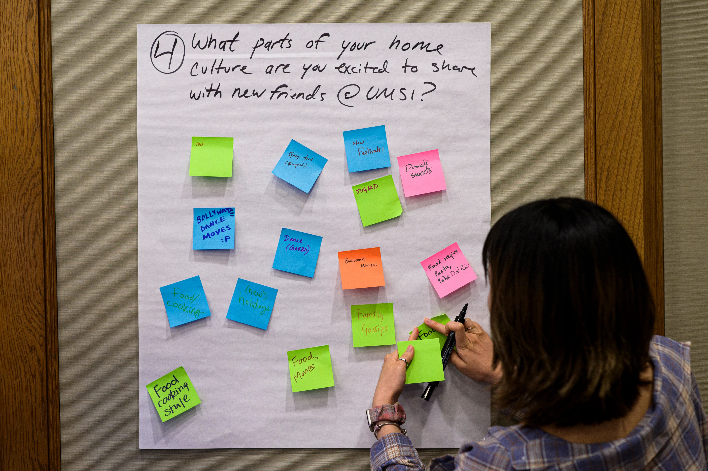
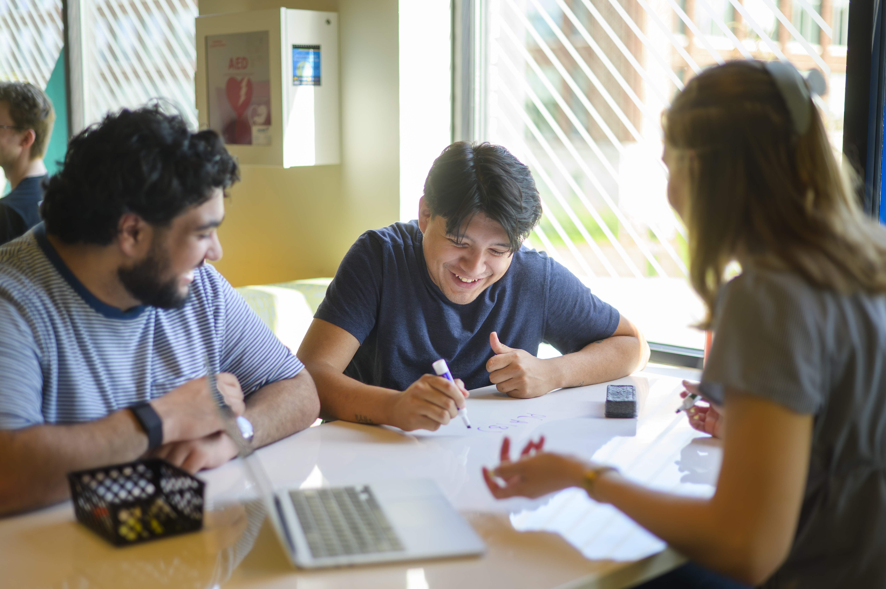

Additional Campus Partner Resources
Cross-disciplinary partner organizations across the University of Michigan offer specialized instructional support and workshop sessions that you can incorporate into your curriculum.
Which Resource Fits Your Project?
Not sure where to start? Match your situation to a campus partner.
-
Working with a community organization or nonprofit: the
Ginsberg Center helps you prepare for respectful, reciprocal
partnerships.
-
Designing technology with people in mind:
C-SEED offers sessions on socially engaged design and community
ethics.
-
Need help with research, citations, or data visualization:
U-M Library Instructional Services teaches these skills.
-
Want stronger teamwork, client communication, or project management:
try the ELO skill-building workshops.
- Focus: Prepares undergraduate and graduate students for respectful, reciprocal community-engaged learning in civic and non-profit settings.
- Note: All first-year MSI and MHI students participate in a foundational Ginsberg workshop through SI 500.
- Action:
Submit a Ginsberg Center Support Request
(Please request at least 1 month in advance).
- Focus: Educational sessions on socially engaged design, sociotechnical thinking, human-centered approaches, and community ethics in technical applications.
- Action:
Explore C-SEED Educational Modules
- Focus: Specialized instruction on source evaluation, special collections, literature strategies, poster presentations, data visualization, and citation management tools.
- Action:
Request U-M Library Instruction
ELO Skill-Building Workshops
During the first month of the Fall and Winter terms, the Engaged Learning Office offers
workshops on the "durable" skills that help projects succeed. Sessions are offered at
introductory, intermediate, and advanced levels, so you can choose the one that matches
where you are in your program.

Teamwork and Collaboration
- Fundamentals of teamwork and team establishment
- Team roles, dynamics, and psychological safety
- Conflict mitigation and constructive resolution
- Peer feedback and team closeout
Client and Partner Engagement
- Fundamentals of client-facing communication
- Establishing client relationships and project bounds
- Maintaining transparent, professional touchpoints
- Deliverable handoff, transition, and project closeout
Project Management
- Fundamentals of agile and phased project management
- Project initiation, chartering, and scoping
- Execution, milestone tracking, and risk monitoring
- Deliverable packaging and project closure
Choose Your Workshop Level
Pick the level that matches your program and the courses you are taking.

Introductory
Best for: first-semester Master's students and first-semester juniors.
Often matches: core required courses and foundational project labs.
Intermediate
Best for: second- and third-semester Master's students, second-semester juniors, and first-semester seniors.
Often matches: elective project courses and applied research units.
Advanced
Best for: final-year Master's students and final-semester seniors.
Often matches: capstones, client clinics, and Master's thesis labs.
Questions about workshop content? Contact Alissa Talley-Pixley, Senior Associate Director
of Student Engagement, at alissat@umich.edu.